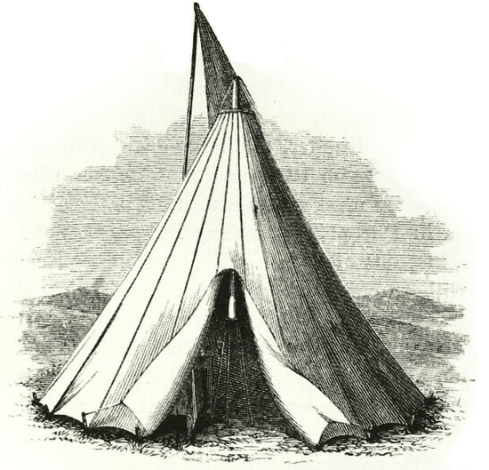

Hello everyone! As you may know by now this is not going to be the normal "run-of-the-mill" type wedding reception.
It's still going to involve all the good stuff like: food, booze
(bring your own, there is no bar in the field and there are no off-licenses near by!!),
dancing and cake.
But we're doing it all in a field 1300 feet up. And then crashing in our tents!!!
Because there is going to be a lot more organising than the usual hotel to book,
we thought we'd ask Adrian to wave his techno-wand and put together this little website for us.
Click on the tent to enter!